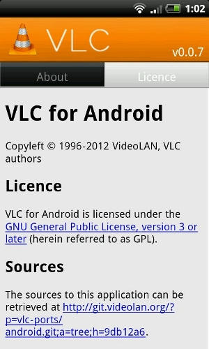
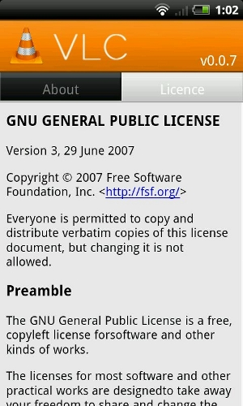
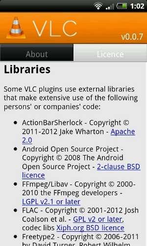

淺談自由開源軟體透過線上軟體市集散布之問題

近年來隨著手持裝置的熱賣，依附這類裝置運作的線上軟體市集（以下簡稱「軟體市集」）已經成為散佈與販賣軟體的重要管道之一，因而吸引了許多開發者在手持裝置上開發各類的軟體（以下簡稱這類軟體為 "App"），並透過軟體市集來散佈，不過由於軟體市集自有一套運作的規則與機制，其呈現介面也與傳統的桌機、筆電不同，因此若開發者利用自由開源軟體開發 App、並透過軟體市集來散佈時，是有可能會產生授權衝突或違反散佈義務等問題。本文從瞭解軟體市集特有的運作規則與機制開始，說明筆者目前所觀察到的一些問題，同時提出預防這些問題發生的建議措施，供 App 開發者參考之用，希望用以降低未來授權糾紛產生的機率。
【軟體市集的運作機制】
軟體市集是一種透過網路來散佈或販售手持裝置上應用軟體的虛擬場域，主要是以作業系統來區分不同的軟體市集，以目前最具規模的兩大軟體市集 Google Play（註一） 與 iTunes App Store（以下簡稱為 "App Store"）為例，前者是散佈與販售 Android 系統上的 App，後者則是散佈蘋果公司 iOS 系統上的 App。有的 App 必須付費後才可以下載使用，但也有很多 App 是採取免費的形式散佈，若是採免費形式的話，通常 App 會內嵌廣告播放機制，讓使用者在開啟、利用軟體的同時看到廣告，透過這種方式，App 的開發者也可以透過廣告收益間接獲利。
從管理層面來看，如同實體的市集或大型商店街有管理或使用規定一樣，虛擬的網路市集、商店也有其個別的管理規定，因此一個 App 上架到軟體市集中的同時，就代表必須受到個別軟體市集規定所拘束。但是，不同的市集有著不同的管理或使用規則，這其中的不同之處可能有著極大的差異。以 Google Play 為例，由於承襲自 Android 系統自由、開放的基本精神，所以背後的維運者 Google 也對上架的 App 採取自由、開放的管理策略，在上架之前對於 App 並沒有設定嚴格的管控流程，這使得 Google Play 好像是一個沒有容量限制的公有市集一樣，任何人只要登記並支付基本費用後，原則上就可以到市場上去展示與販賣產品，而針對 App 後續的散佈狀況 Google 也沒有強制規範。蘋果公司的 App Store 則是另外一種典型，因為蘋果產品一直以高質感為主要訴求，為了維持一貫的品質保證，所以 App 在上架之前，開發者除了必須先行登記與支付費用外，還必須讓 App 通過一定的審查流程，以確保 iOS 系統裝置的使用者可以獲得最佳的使用效果，而針對 App 後續被下載與利用的狀況，蘋果公司也有進行一定程度的管控。
在這樣的軟體市集的運作機制之下，筆者觀察到一些與應用自由開源軟體相關的問題，因此本文接下來將說明這些衝突的問題點，同時提出預防這些問題發生的建議措施。
【軟體市集的散佈規定與自由開源授權條款相衝突】
談到自由開源軟體透過軟體市集散佈的問題案例，最著名的應該要屬 2011 年 1 月初 VLC（註二）自 App Store 下架事件。VLC 是一款多媒體播放軟體，採用 GPL-2.0 條款授權，經由 Applidium 這間公司修改後於 App Store 上架，後來 VLC 的開發者 Rémi Denis-Courmont 表示 App Store 的使用條款與 GPL-2.0 規定有所牴觸，因為透過 App Store 下載的程式僅可以在一定數量的 iOS 裝置中安裝與使用，這與 GPL-2.0 授與使用者可以無限制地在任何裝置上安裝 VLC 的規定有所牴觸（註三），Denis-Courmont 因而希望蘋果公司可以將 App Store 使用條款修改至符合 GPL-2.0 的狀態，不過最後蘋果公司並未修改使用條款，而是直接將 VLC 自 App Store 下架（註四）。
另外還有一種狀況可以跟上述 VLC 案例一起歸類為授權衝突的問題，並且一起討論：例如採用 GPL 授權的免費 App 中，卻置入了無法提供源碼的廣告播放程式。GPL 規定散佈程式的同時，必須將程式源碼也提供給使用者，此外，這類條款也規定衍生程式仍然必須採用相同的條款繼續授權，因此 GPL 授權的 App 中，若是置入廣告播放程式，這個廣告播放程式可能也會被認定是 App 的衍生部份，要繼續採用相同條款來授權，廣告播放程式的源碼也因此必須要提供給予 App 的使用者，若開發者無法提供，即相當程度已然違反了 GPL 的規定。
【BSD 類授權條款給予 App 較大的彈性運用空間】
以上這兩種衝突的狀況，都是與部份自由開源軟體具有的 Copyleft 特性相關，因此若是在開發 App 的同時，就規劃避免使用到具有 Copyleft 特性條款授權元件，那麼就可以將問題發生的機率從根本處來大幅度降低。不過避用這類型元件不代表完全避用自由開源軟體，開發者還可以採用其他條款授權的自由開源軟體，其中又以 BSD、MIT 與 Apache 等 BSD 類條款授權的自由開源軟體最為適合，因為這類授權條款的規定寬鬆且具有相當的彈性，開發者在散佈程式的主要義務是讓他人看到授權聲明與免責聲明，只要該程式聲明不再依照原授權方式散佈，則授權內容並不強制散佈程式的同時一定要提供源碼，此外，這類條款也不會限制衍生程式所使用的授權方式，開發者對於衍生出來的 App 仍然有著選擇其他授權條款的彈性空間。因此利用 BSD 類程式碼所開發的 App，一旦上架到像 App Store 這類有著較多管控規定的軟體市集中，原則上授權條款與管理使用規定間並不會發生直接衝突，而即使置入了無法提供源碼的廣告播放程式，也不會讓 App 陷於違反授權義務的狀況。
此外，若是一個 App 的著作權利能完整地集中在一個人或一間公司、組織身上，那麼此 App 便可以在權利人的規劃下，針對不同的狀況為軟體制定、選擇或適用不同的授權條款，此時即使 App 初始採用 GPL 來授權，著作權人一樣可以置入無法提供源碼的廣告播放程式，或者在同意 App Store 的使用規定之後，透過 App Store 來散佈 App。
以 App Store 上一款採用 GPL-2.0 及其後版本授權的遊戲 Dollar Bets 為例（註五），一方面這款 App 所利用到的第三方程式都是採用寬鬆的 BSD 類條款來授權，所以 Dollar Bets 不會受限於 GPL 授權條款，另一方面，Dollar Bets 其餘程式碼的權利均集中在一位特定開發者的身上，所以綜合來說，這位單一開發者可以讓 Dollar Bets 透過 GPL-2.0 及其後版本來授權散佈，同時也可以允許 Dollar Bets 的散佈與安裝受到 App Store 使用規定的限制。
▲ 圖1：Dollar Bets 的授權聲明內容。
【透過技術方法來區隔 GPL 程式碼須個案而論】
而除了上述從根本處選擇利用 BSD 類條款授權元件之外，也可以從技術上來進行微調、輔以論理說明，來區隔 GPL 授權的程式碼，進而增加 App 本身或者廣告播放程式不受到 GPL 拘束的立論。例如：在 GPL-3.0 授權的 App 中置入 AdMob 廣告播放程式，由於 AdMob 本身是以一個獨立元件的方式存在，其中也沒有包含來自 App 的程式碼，因此若是讓使用者在下載 App 的時候可以手動將廣告播放機制拿掉，而這個沒有廣告播放機制的 App 仍然可以運作，如此就比較可以合理化主張 AdMob 廣告程式並非 App 的衍生部份，進而不受到 GPL-3.0 所拘束，此時，若不提供 AbMob 廣告程式源碼也並不違反 GPL-3.0 的義務規定。
以上所舉的例子較為簡單，也容易瞭解。不過其實這部份涉及 GPL 條款的灰色地帶，在技術操作上與解釋上均較為複雜，必須個案舉例討論，宥於本文篇幅，筆者無法在此詳加說明。若讀者對此議題有興趣的話，可以參考 OpenFoundry 網站上「法律專欄」中的相關文章（註六）。
【未遵守自由開源授權條款的散佈相關義務】
除了授權相容性衝突的問題之外，筆者觀察到另外一大類的問題是，許多自由開源的 App 並未遵守條款中的散佈義務規定。
自由開源授權條款規定使用者在散佈程式的同時，都負有或多或少的義務，簡要的授權條款如 BSD 或 MIT，也規定後手使用者有權利瀏覽到程式的著作權聲明與免責聲明，而像 GPL 這類義務規定較多的授權條款，還必須要提供一個可以讓使用者取得源碼的管道。不過就筆者所觀察到的現況來說，許多 App 在下載頁面雖然說明是自由開源軟體，卻沒有更進一步的資訊或是任何連結可供閱讀，又或者某些 App 讓使用者在手持裝置上可以下載、安裝受歡迎的 GPL 軟體來使用，但是卻沒有提供使用者 GPL 授權條款全文的內容，也沒有任何的說明讓使用者瞭解可以如何取得源碼。這樣的現象對於想要進一步瞭解授權資訊與取得程式源碼的使用者相當不便，同時也是不符合自由開源授權條款相關規定的。
其實 App 也是一個軟體程式，如同所有其他在桌機或筆電上執行的軟體程式，一樣可以標示授權相關資訊以及提供使用者取得源碼的途徑，只是在如何導引使用者找到這些資訊的路徑設計上與介面呈現上略有不同而已。以本文上述所提到的 VLC 為例，其在 Android 裝置上執行的版本 VLC for Android 就有著清楚的授權聲明與下載源碼的指示資訊：
1. VLC for Android 在功能選單中有一個 "About" 的選項，點選進入其中就會看到一個 "License" 的頁面，這個頁面的一開始就有簡要清晰的文字顯示著作權聲明、採用 GPL-3.0 及其後版本的授權資訊，以及取得程式源碼的網址。而若是點選程式源碼網址的話，就會進入 VLC for Android 在 git 開發系統上面的源碼樹狀目錄，使用者因此可以瀏覽與取得 VLC for Android 的源碼。

▲ 圖2：VLC for Android 將著作權聲明、授權聲明與源碼取得網址集中在 "License" 頁面。
2. GPL-3.0 全文也放置在 "License" 頁面的下半部，使用者若是點選授權聲明中的錨點 (anchor)，瀏覽頁面就會被帶到 GPL-3.0 全文的開頭，使用者因此可以瀏覽到授權條款的全文。

▲ 圖3：GPL-3.0 的全文內容置於 "License" 頁面的下半部份。
3. "License" 頁面中也羅列了 VLC for Android 中所利用到的第三方函式庫資訊，相關描述相當完整，包括了函式庫名稱、著作權人以及該函式庫所採用的授權條款，而各授權條款也都設置有錨點或超連結，讓使用者可以點選進入授權條款全文頁面閱讀。

▲ 圖4：VLC for Android 羅列出所使用的第三方函式庫以及其基本的著作權與授權資訊。
【結語】
本文所提出的問題以及建議的預防措施，僅是筆者粗淺的觀察與想法，在 App 這個新崛起的領域中，必然還有許多其他授權相關的問題尚未被提出來討論，例如：GPL-2.0 授權的 App 原則上都是透過網路傳輸的方式來散佈，因此若在 App 下載頁面同時提供源碼取得連結，是否就符合 GPL-2.0 的散佈規定，不需要另外提供源碼散佈的管道？這也是一個在網路論壇上為人所討論，但尚未獲得全面共識的問題，畢竟，GPL-2.0 因成文於 1991 年，當時並未界定與容許網路散佈源碼的模式，因此在嚴格文意解釋下，應僅容許透過實體媒介 (medium) 與載體的散佈途徑。所以筆者透過本文拋磚引玉，期待未來可以有更多的 App 開發者瞭解自由開源軟體的遊戲規則，同時以開放、分享的精神來利用與分享這些源生於自由開源授權元件的 App。
註一：Google Play 舊名 Android Market，Google 在整合旗下多項的線上下載服務之後，於 2012 年初正式將新的線上下載服務系統更名為 Google Play。新聞：https://chinese.engadget.com/2012/03/06/google-play-replaces-android-market/。
註二：VLC 網站：https://www.videolan.org/vlc/。
註三：這邊所牴觸的是 GPL-2.0 第 6 條最後一句的規定，該條規定使用者在散佈程式的同時不得增加後手使用者在利用程式方面的限制，以避免妨礙後手行使 GPL-2.0 所授與的權利。現行 App Store 所使用的條款與當時類似，但並不完全相同，若讀者要追溯 2010 年 App Store 的使用條款內容，請參考自由軟體基金會在 2010 年 5 月處理 GNU GO 透過 App Store 散佈一事所發佈的新聞稿：https://www.fsf.org/blogs/licensing/more-about-the-app-store-gpl-enforcement。這篇新聞稿有說明當時 App Store 使用條款與 GPL-2.0 衝突之處，同時也提供了當時該使用條款全文內容的庫存頁面。現行 App Store 所適用的條款為 " ITUNES STORE TERMS AND CONDITIONS"：https://www.apple.com/legal/itunes/us/terms.html#SERVICE，這份條款在 "AUTOMATIC DELIVERY AND DOWNLOADING PREVIOUS PURCHASES" 一節中的第 3 段第 (i) 款內容中，有著類似的規定。
註四：關於 Rémi Denis-Courmont 的公開聲明與說明，請參考右列兩頁 VLC 討論區的內容：https://mailman.videolan.org/pipermail/vlc-devel/2010-October/076868.html；https://mailman.videolan.org/pipermail/vlc-devel/2010-October/076870.html。而在此事發生之後，為了讓 VLC 可以被廣泛地利用，甚至包括 iOS 系統的使用者，VLC 社群開始授權條款轉換程序，預計會將 VLC 從 GPL-2.0 完全轉為 LGPL-2.1 授權：https://www.h-online.com/open/news/item/Relicensing-VLC-to-the-LGPL-the-hard-way-1750805.html；https://www.videolan.org/press/lgpl.html。 截至筆者截稿為止，已經有不少重要的 VLC 模組與函式庫轉換為 LGPL-2.1 授權，不過這個授權轉換程序尚未完全完成，因此在官網上目前仍然標示大部分的 LVC 程式碼採用 GPL-2.0 來授權：https://www.videolan.org/legal.html。
註五：Dollar Bets 目前在 iTunes 的介紹頁面：https://itunes.apple.com/us/app/dollar-bets/id476400746?ls=1&mt=8；這個專案在 Github 的開發專案網址：https://github.com/Rich86man/Dollar-Bets；Dollar Bets 在其專案首頁中有著清楚的授權聲明：https://github.com/Rich86man/Dollar-Bets。
註六：關於 GPL 條款衍生程式判定標準與進一步說明與討論，可以參閱下列兩篇文章：林誠夏，GPL 條款對於衍生程式的判定標準與其授權拘束性的擴散範圍（上），https://www.openfoundry.org/tw/legal-column-list/8446；林誠夏，GPL 條款對於衍生程式的判定標準與其授權拘束性的擴散範圍（下），https://www.openfoundry.org/legal-column/8447。
您也許有興趣閱讀以下文章:
- 淺談自由開源軟體個人終端使用者之善意保護 - 2014-10-30